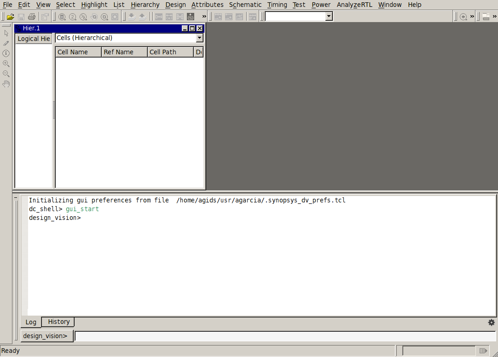
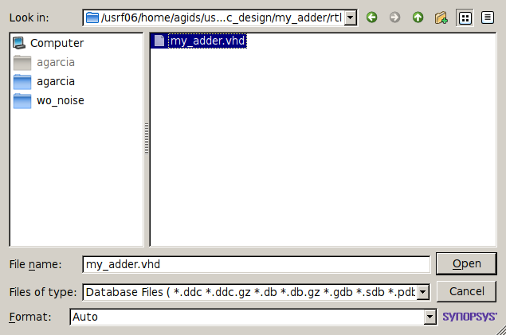
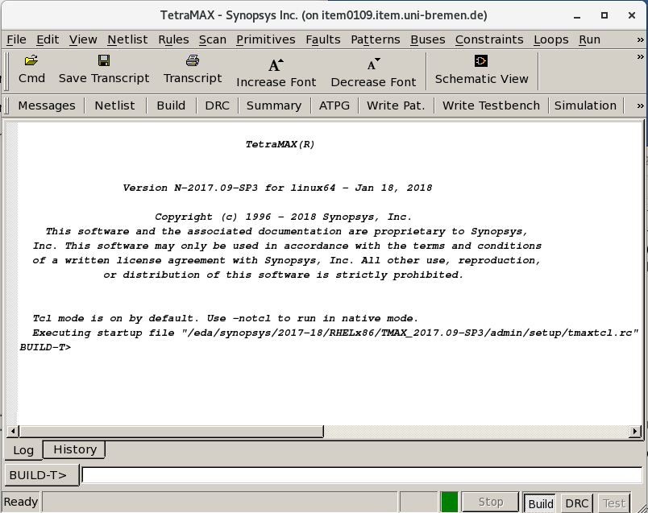
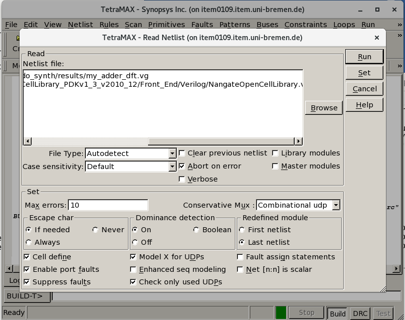
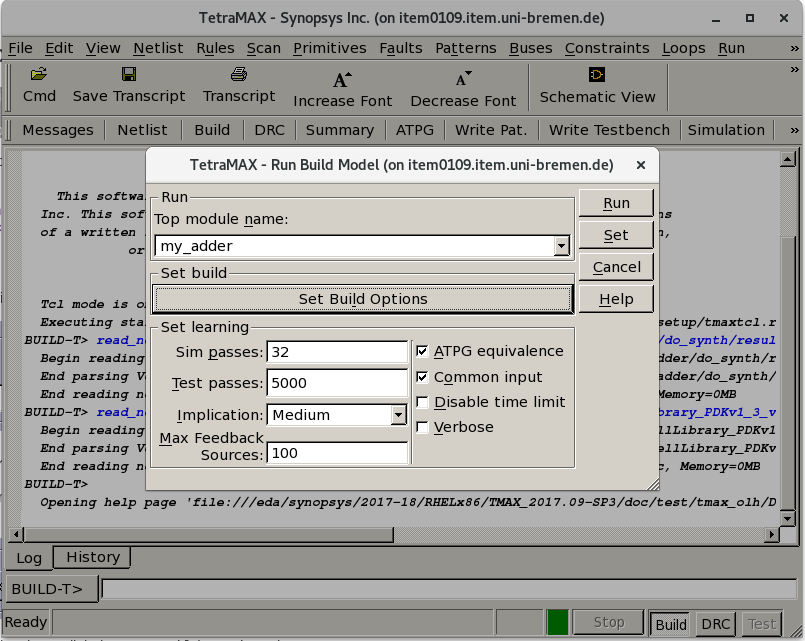
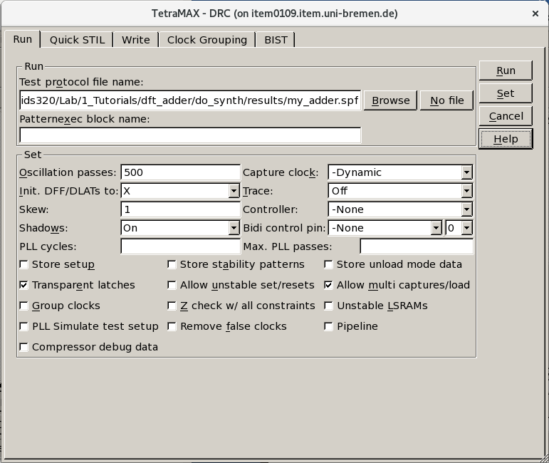

Tutorial IC Design
Table of Contents
1. Design For Test
1.1. Goals
The goal of this tutorial is to learn design for test and generation of test patterns. In this part of the lab, we use a simple adder design for better understanding of the fellow without dealing with design complications. In more complex designs, some further changes to the design might be necessary. In this experiment, we will modify the architecture by adding some scan input and output pins.
In this tutorial, you are going to exersice the following steps:
- Modify the design
- Integrate the scan architechture into the design
- Automatic Test Pattern Generation (ATPG)
- Simulating the design using the generated patterns
1.2. Orginize your data and setup the tool
Before you start, it is a good idea to orginize your data by creating set of directories
where you are going to put the data generated during the design flow. Go to the directory
of dft/do_synth and create the following directories to organize the date:
cd dft/do_synth mkdir results mkdir reports mkdir cmd mkdir log
2. Design the unit (RTL)
The first step in the design flow is to create the RTL code of the
adder using VHDL. You just need a text editor to write VHDL. In the terminal, go to the
directory dft/rtl and open a text editor to create the file
my_adder.vhd. There are a lot of possibilities, as
vim, nano, gedit, etc. I would recomend you emacs.
In the terminal execute:
cd dft/rtl
and then,
emacs my_adder.vhd &
The code can be as follows:
library ieee;
use ieee.std_logic_1164.all;
use ieee.numeric_std.all;
entity my_adder is
port (
clk,rstn: in std_logic;
dta,dtb : in std_logic_vector(7 downto 0);
dto : out std_logic_vector(7 downto 0));
end my_adder;
architecture rtl of my_adder is
signal dta_int,dtb_int,dto_int : std_logic_vector(7 downto 0);
begin -- architecture rtl
-- Define the memory elements
process (clk, rstn) is
begin -- process
if rstn = '0' then -- asynchronous reset (active low)
dta_int <= (others=>'0');
dtb_int <= (others=>'0');
dto <= (others=>'0');
elsif clk'event and clk = '1' then -- rising clock edge
dta_int <= dta;
dtb_int <= dtb;
dto <= dto_int;
end if;
end process;
-- Define the adder
dto_int <= std_logic_vector( signed(dta_int)+signed(dtb_int) );
end architecture rtl;
In order to integrate the scan chain into the design, we need to modify the design. Define SERIAL_IN and SCAN_EN as input ports of form std_logic and SERIAL_OUT as output port of the std_logic. Save the changes and close the text editor.
SERIAL_IN, SCAN_EN: in std_logic; SERIAL_OUT: out std_logic
3. Lunch design compiler
For this lab you are going to use the Design Compiler tool from Synopsys as well as
INNOVUS from Cadence. In the terminal, go to the directory dft/do_synth. for using the Design Compiler
create a sourceme.sh file to do the setup.
export SNPSLMD_LICENSE_FILE=28231@item0096
export PATH=/usrf01/prog/synopsys/syn/R-2020.09-SP4/bin:${PATH}
Now you can source that file.
source sourceme.sh
Before you open the synthesis tool, it is practical to select the library of
standard cells that you use and to instruct the tool to save the log
files into the directories that you have previously defined. You can
do that creating a .synopsys_dc.setup file. Run emacs .synopsys_dc.setup.
First, you can add the following commands to your .synopsys_dc.setup
file; they instruct the tool to use your directories.
define_design_lib work -path ./tool/work set_app_var view_log_file ./log/synth_view.log set_app_var sh_command_log_file ./log/synth_sh.log set_app_var filename_log_file ./log/synth_file.log set_app_var search_path [concat ./cmd/ [get_app_var search_path] ]
And afterwards you can write the command to define the library to use.
set library_path "../../../0_FreePDK45/LIB/"
set library_name "NangateOpenCellLibrary_typical_ccs_scan.db"
set_app_var target_library $library_name
set_app_var link_library [concat $library_name dw_foundation.sldb "*"]
set_app_var search_path [concat $library_path [get_app_var search_path] ]
set_app_var synthetic_library [list dw_foundation.sldb]
set_app_var symbol_library [list class.sdb]
set_app_var vhdlout_use_packages { ieee.std_logic_1164.all NangateOpenCellLibrary.Components.all }
set_app_var vhdlout_write_components FALSE
Save your file. Now you can start the tool. Launch design_vision in the terminal. To
save the log in a directory, you can add a linux pipe
tee log/synthesis.log that redirects the log output to a file called log/synthesis.log.
design_vision | tee log/synthesis.log &

4. DFT configuration and synthesis
4.1. Design import
The first step is to read the RTL code. In the menu select File →
Read . In the new window select the VHDL code to read, i.e., ../rtl/my_adder.vhd and click Open.

Alternatively, you can type the following command line in the design_vision prompt.
read_file -format vhdl {../rtl/my_adder.vhd}
The tool reads and "understands" the code. In the log file you can see the elements that it has inferred. For example, it found the following registers:
Inferred memory devices in process in routine my_adder line 22 in file '/usrf06/home/agids/usr/agarcia/GIT/tutorial_ic_design/my_adder/rtl/my_adder.vhd'. =============================================================================== | Register Name | Type | Width | Bus | MB | AR | AS | SR | SS | ST | =============================================================================== | dto_reg | Flip-flop | 8 | Y | N | Y | N | N | N | N | | dta_int_reg | Flip-flop | 8 | Y | N | Y | N | N | N | N | | dtb_int_reg | Flip-flop | 8 | Y | N | Y | N | N | N | N | =============================================================================== Presto compilation completed successfully.
4.2. DFT synthesis
Before configure the DFT once compile the design and have a look at the schematic of your design.
you can type the following command line in the design_vision prompt.
compile
Observe that the DFFR_X1 registers are used by the synthesis tool.
Now, we are going to configure the DFT. There are many options which should be set to configure the DFT. Among all options, we set the clock, test period, type of scan cells, the reset, scan input and output, Scan enable and test mode. There are three widly used scan cells, Muxed-D Scan Cell, Clocked Scan Cell and LSSD Scan Cell. Here, we use MUXED-D scan cells.
set_scan_configuration -style multiplexed_flip_flop
set test_default_period 100
set_dft_signal -view existing_dft -type ScanClock -timing {45 55} -port clk
set_dft_signal -view existing_dft -type Reset -active_state 0 -port rstn
set_dft_signal -view spec -type ScanDataIn -port SERIAL_IN
set_dft_signal -view spec -type ScanDataOut -port SERIAL_OUT
set_dft_signal -view spec -type ScanEnable -port SCAN_EN -active_state 1
create_test_protocol
Now you can begin the DFT synthesis. Execute the following commands:
compile -scan
Using this command, we redo the compilation by replacing all the sequential elements by scan equivalent. Observe the replacement of the sequential elements of the DFFR_X1 with the scan equivalent of SDFFRS_X1 in your design.
You can preview the scanned design for scan chain information using:
preview_dft
Besides, you can check the design for design rule violations using the following command:
dft_drc
After that you can specify the scan chain. You can select the number and length of the scan chains. We define only one scan chain for this design. In addition, we define that no different clock edges may occur in the scan chain. The input and output of the scan chain is also specified.
set_scan_configuration -chain_count 1 set_scan_configuration -clock_mixing no_mix set_scan_path chain1 -scan_data_in SERIAL_IN -scan_data_out SERIAL_OUT
Then, the scan chain can be inserted into the design. In addition, the command
set_scan_state_scan_existing indicates that the scan chain is fully implemented or not.
insert_dft set_scan_state scan_existing
Check the schematic of your design once more. The scan chain inserted in the design.
Finally, we can produce some reports including the scan chain and the instances in each chain using the report_scan_path as follows:
report_area report_timing report_power report_scan_path -view existing_dft -chain all > reports/chain.rep report_scan_path -view existing_dft -cell all > reports/cell.rep
After top-level scan insertion, we need different files for test pattern generation with TetraMax from synopsys.
Write out the test protocol file in Standard Test Interface Language (STIL) format and write out a Verilog or VHDL top-level netlist. For example, use the following tcl commands to save the necessary files as follows:
change_names -hierarchy -rule verilog write -format verilog -hierarchy -out results/my_adder_dft.vg write -format ddc -hierarchy -output results/my_adder_dft.ddc write_scan_def -output results/my_adder_scan.def set test_stil_netlist_format verilog write_test_protocol -output results/my_adder.stil
Using the above commands, we write a gate level netlist .vg. set test_stil_netlist_format verilog command
identifies the netlist format that you are exporting to TetraMAX ATPG. We also write out the test protocol file using the
write_test_protocol command.
5. ATPG
5.1. Lunch TetraMAX
In this part, we want to use the TetraMax from synopsys to create the test patterns.
Redirect to the tetramex folder cd dft/tetramx and start the software as follows:
export PATH="/usrf01/prog/synopsys/txs/R-2020.09-SP4/bin:${PATH}"
tmax

5.2. Read the netlist and library files
In this step, we read the gate level netlist of the design as well as the library definition
of each cell in verilog format. Browse the netlists and add the verilog netlist of the design from
the dft/do_synth/results directory. Moreover, add the nangate library in verilog format in
0_FreePDK45/Verilog/NangateOpenCellLibrary.v directory.

5.3. Build the design
The Run Build Model dialog box sets the relevant parameters and builds the in-memory simulation model from the design modules that have been read in. TetraMAX ATPG performs a learning process, which you can control with this dialog. If a simulation model already exists, it is automatically deleted before the new model is built. Select the Build from the menu bar and select your top design. We use default options of Set learning box.

5.4. DRC check
Now, we perform design rule checking (DRC). First, specifie the name of the STIL procedures
file that defines the scan chains and test procedures, then click on Run.

5.5. Generate the test pattern
After you have imported the design and completed the DRC check without error, you can use TetraMax to create the test patterns. First, the errors should be annotated. In our case, we would like to check all stuck-at errors. Use the following two commands to annotate the errors and generate the test patterns:
add_faults -all run_atpg -auto
ATPG performed for stuck fault model using internal pattern source.
----------------------------------------------------------
#patterns #faults #ATPG faults test process
stored detect/active red/au/abort coverage CPU time
--------- ------------- ------------ -------- --------
Begin deterministic ATPG: #uncollapsed_faults=154, abort_limit=10...
7 154 0 0/0/0 100.00% 0.00
Uncollapsed Stuck Fault Summary Report
-----------------------------------------------
fault class code #faults
------------------------------ ---- ---------
Detected DT 354
Possibly detected PT 0
Undetectable UD 24
ATPG untestable AU 0
Not detected ND 0
-----------------------------------------------
total faults 378
test coverage 100.00%
-----------------------------------------------
Pattern Summary Report
-----------------------------------------------
#internal patterns 7
#basic_scan patterns 7
-----------------------------------------------
CPU Usage Summary Report
-----------------------------------------------
Total CPU time 0.00
-----------------------------------------------
Finally, we write the generated pattern in binary format using the following tcl command:
write_patterns my_adder_pattern.v -internal -format binary